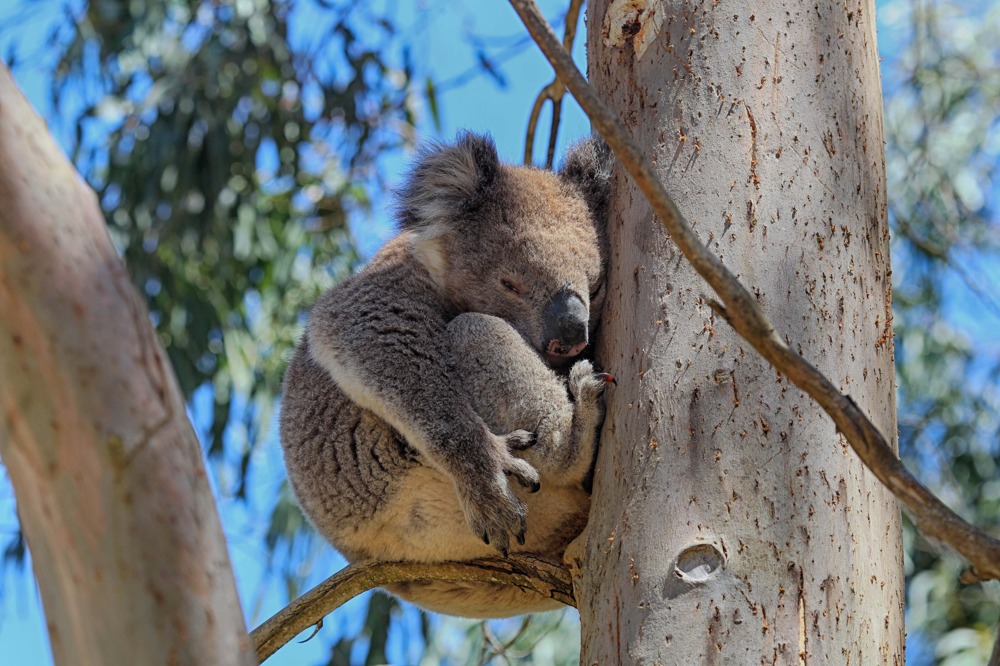
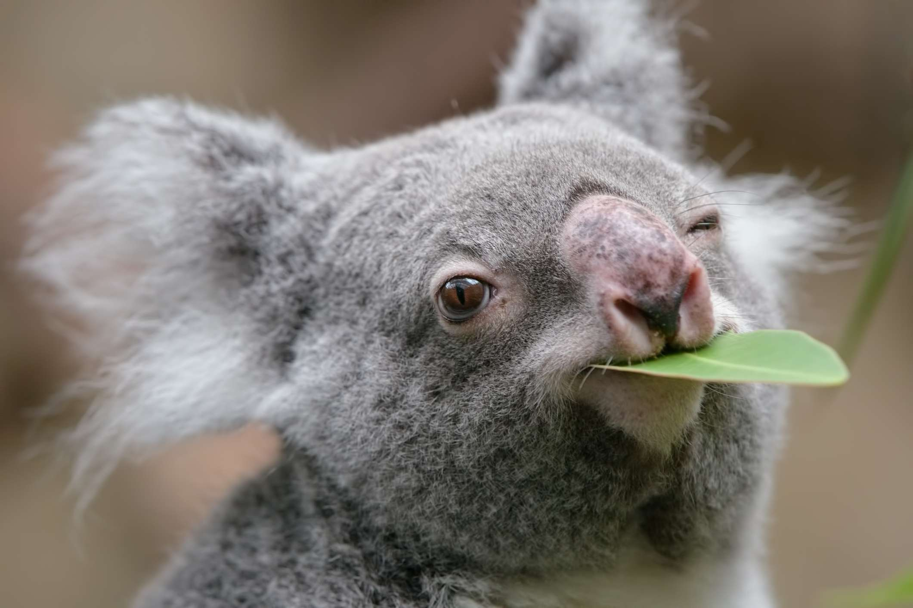

Sumérgete en la vida de los encantadores koalas, aprende sobre su ecología y cómo podemos protegerlos.
Los koalas viven en las bosques de eucaliptos de Australia. Estos ambientes son cruciales para su supervivencia, ya que les proporcionan alimento y refugio.
Los koalas tienen una dieta especializada, consumiendo principalmente hojas de eucalipto. Pasan gran parte del día durmiendo en las ramas de los árboles.
La población de koalas está disminuyendo debido a la destrucción del hábitat y enfermedades. Es crucial apoyar esfuerzos de conservación para proteger estas especies únicas.
Para más información sobre cómo puedes ayudar a los koalas, visita Save the Koala.